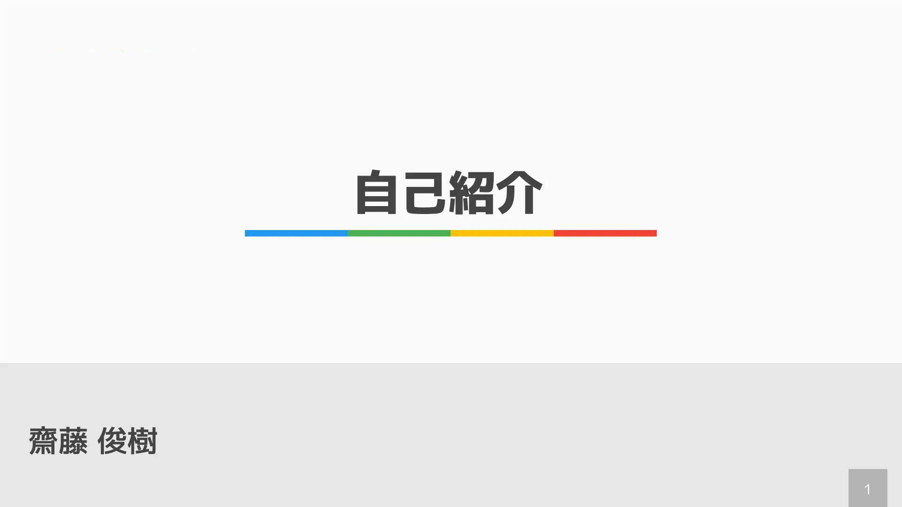
自己紹介 齋藤 俊樹 1
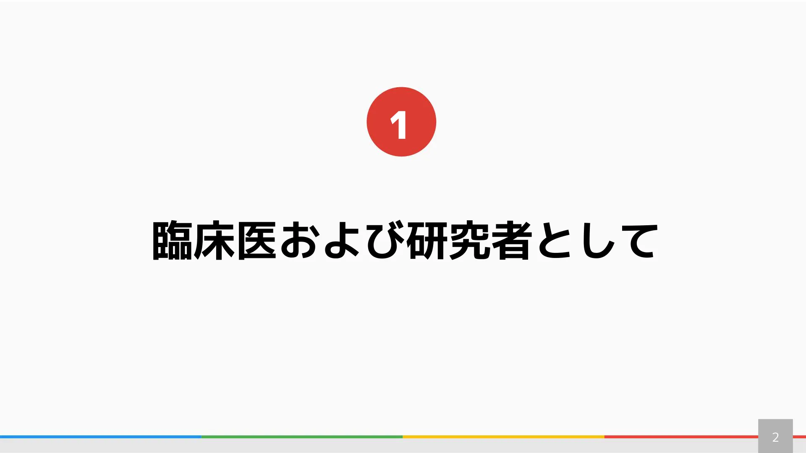
2 臨床医および研究者として 1
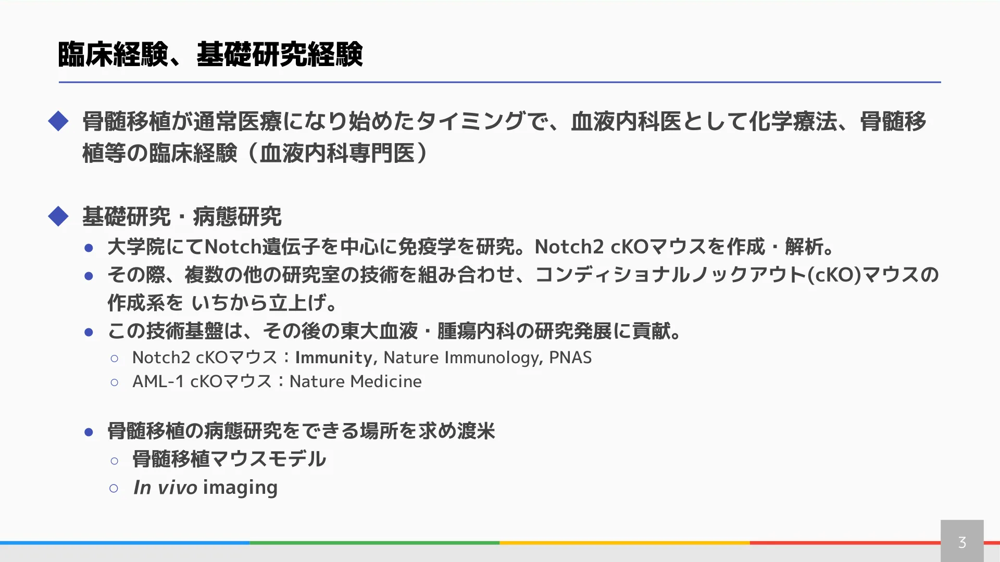
3 ◆骨髄移植が通常医療になり始めたタイミングで、血液内科医として化学療法、骨髄移 植等の臨床経験（血液内科専門医） ◆基礎研究・病態研究 ●大学院にてNotch遺伝子を中心に免疫学を研究。Notch2 cKOマウスを作成・解析。 ●その際、複数の他の研究室の技術を組み合わせ、コンディショナルノックアウト(cKO)マウスの 作成系を いちから立上げ。 ●この技術基盤は、その後の東大血液・腫瘍内科の研究発展に貢献。 ○Notch2 cKOマウス：Immunity, Nature Immunology, PNAS ○AML-1 cKOマウス：Nature Medicine ●骨髄移植の病態研究をできる場所を求め渡米 ○骨髄移植マウスモデル ○In vivo imaging 臨床経験、基礎研究経験
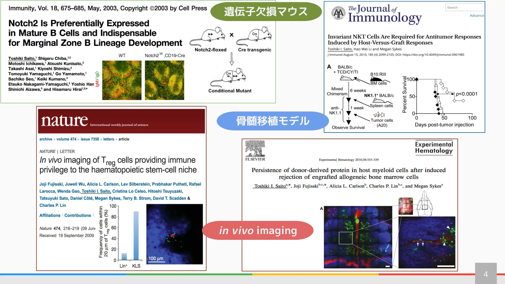
4 遺伝子欠損マウス 骨髄移植モデル in vivo imaging
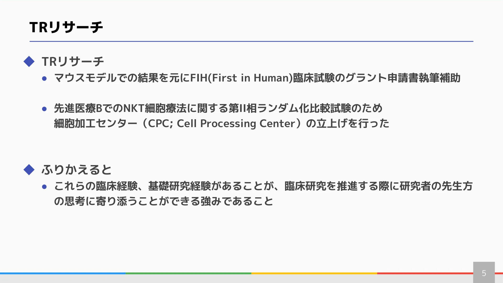
5 TRリサーチ ◆TRリサーチ ●マウスモデルでの結果を元にFIH(First in Human)臨床試験のグラント申請書執筆補助 ●先進医療BでのNKT細胞療法に関する第II相ランダム化比較試験のため 細胞加工センター（CPC; Cell Processing Center）の立上げを行った ◆ふりかえると ●これらの臨床経験、基礎研究経験があることが、臨床研究を推進する際に研究者の先生方 の思考に寄り添うことができる強みであること
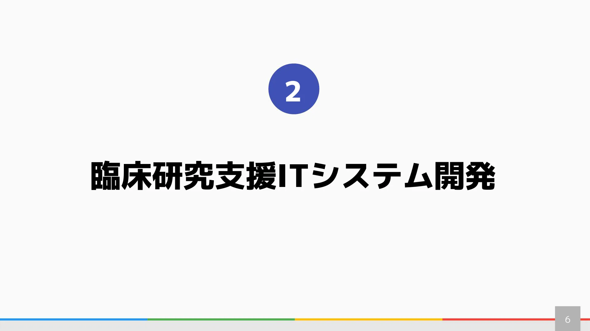
6 臨床研究支援ITシステム開発 2
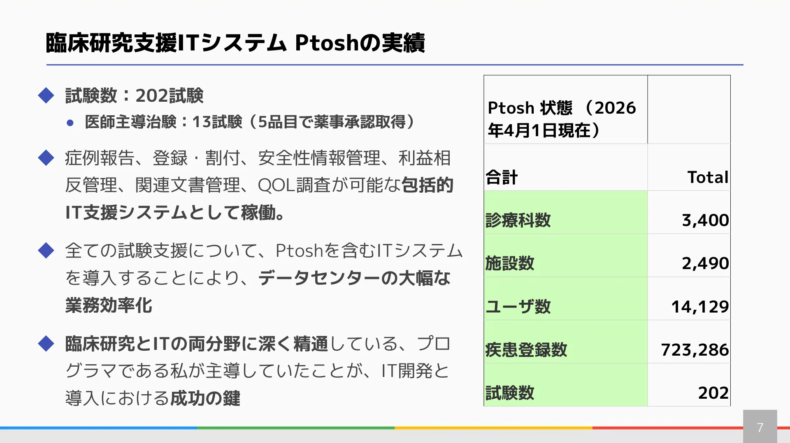
7 臨床研究支援ITシステム Ptoshの実績 ◆試験数：202試験 ●医師主導治験：13試験（5品目で薬事承認取得） ◆症例報告、登録・割付、安全性情報管理、利益相 反管理、関連文書管理、QOL調査が可能な包括的 IT支援システムとして稼働。 ◆全ての試験支援について、Ptoshを含むITシステム を導入することにより、データセンターの大幅な 業務効率化 ◆臨床研究とITの両分野に深く精通している、プロ グラマである私が主導していたことが、IT開発と 導入における成功の鍵 Ptosh 状態 （2026 年4月1日現在） 合計 Total 診療科数 3,400 施設数 2,490 ユーザ数 14,129 疾患登録数 723,286 試験数 202
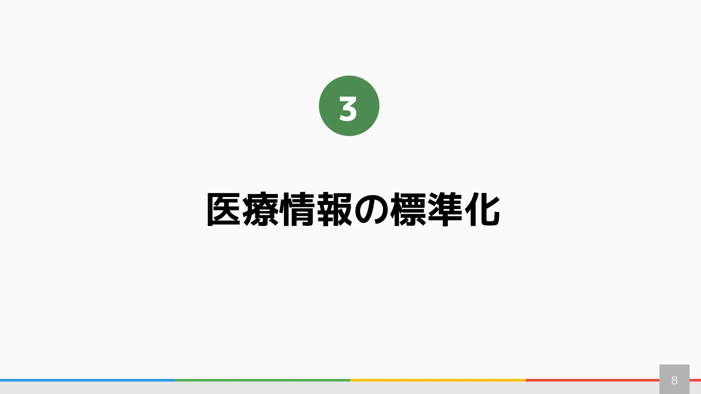
8 医療情報の標準化 3
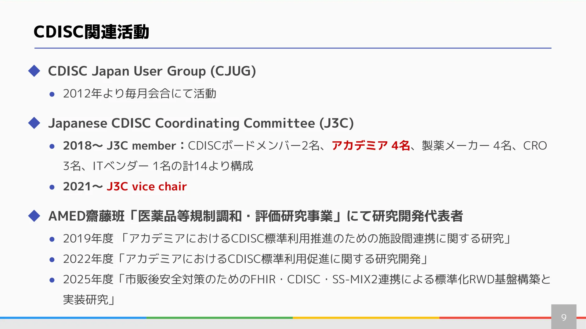
9 CDISC関連活動 ◆CDISC Japan User Group (CJUG) ●2012年より毎月会合にて活動 ◆Japanese CDISC Coordinating Committee (J3C) ●2018〜 J3C member：CDISCボードメンバー2名、アカデミア 4名、製薬メーカー 4名、CRO 3名、ITベンダー 1名の計14より構成 ●2021〜 J3C vice chair ◆AMED齋藤班「医薬品等規制調和・評価研究事業」にて研究開発代表者 ●2019年度 「アカデミアにおけるCDISC標準利用推進のための施設間連携に関する研究」 ●2022年度「アカデミアにおけるCDISC標準利用促進に関する研究開発」 ●2025年度「市販後安全対策のためのFHIR・CDISC・SS-MIX2連携による標準化RWD基盤構築と 実装研究」
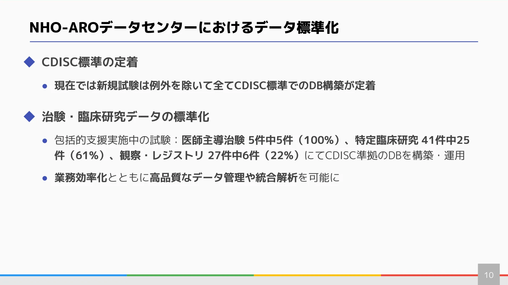
10 ◆CDISC標準の定着 ●現在では新規試験は例外を除いて全てCDISC標準でのDB構築が定着 ◆治験・臨床研究データの標準化 ●包括的支援実施中の試験：医師主導治験 5件中5件（100%）、特定臨床研究 41件中25 件（61%）、観察・レジストリ 27件中6件（22%）にてCDISC準拠のDBを構築・運用 ●業務効率化とともに高品質なデータ管理や統合解析を可能に NHO-AROデータセンターにおけるデータ標準化
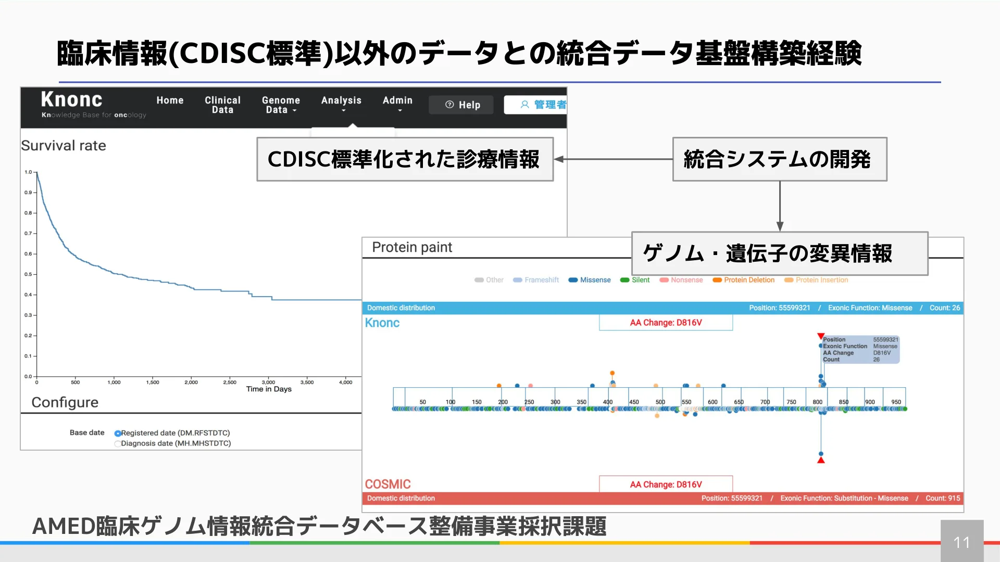
臨床情報(CDISC標準)以外のデータとの統合データ基盤構築経験 11 CDISC標準化された診療情報 ゲノム・遺伝子の変異情報 統合システムの開発 AMED臨床ゲノム情報統合データベース整備事業採択課題
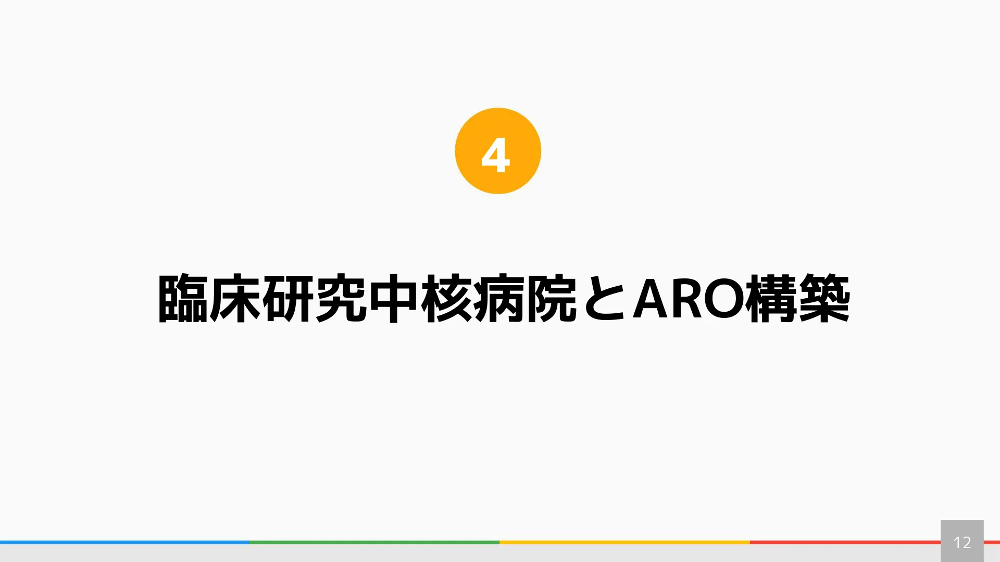
12 臨床研究中核病院とARO構築 4
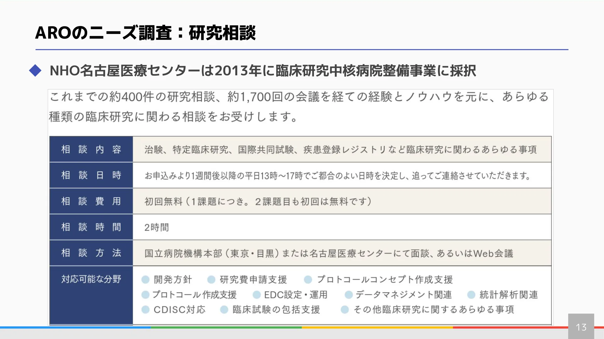
13 AROのニーズ調査：研究相談 ◆NHO名古屋医療センターは2013年に臨床研究中核病院整備事業に採択
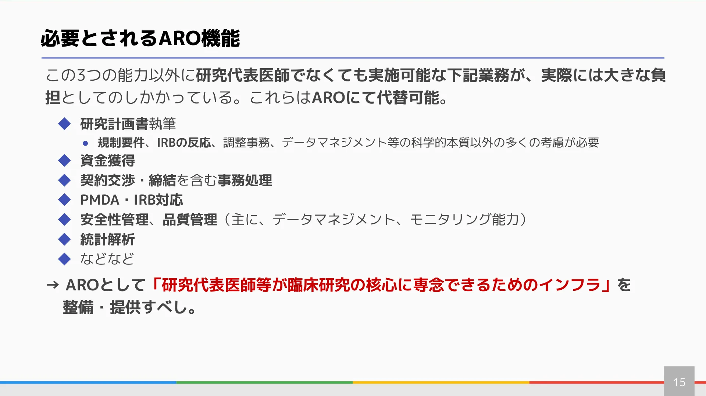
15 必要とされるARO機能 この3つの能力以外に研究代表医師でなくても実施可能な下記業務が、実際には大きな負 担としてのしかかっている。これらはAROにて代替可能。 ◆研究計画書執筆 ●規制要件、IRBの反応、調整事務、データマネジメント等の科学的本質以外の多くの考慮が必要 ◆資金獲得 ◆契約交渉・締結を含む事務処理 ◆PMDA・IRB対応 ◆安全性管理、品質管理（主に、データマネジメント、モニタリング能力） ◆統計解析 ◆などなど → AROとして「研究代表医師等が臨床研究の核心に専念できるためのインフラ」を 整備・提供すべし。
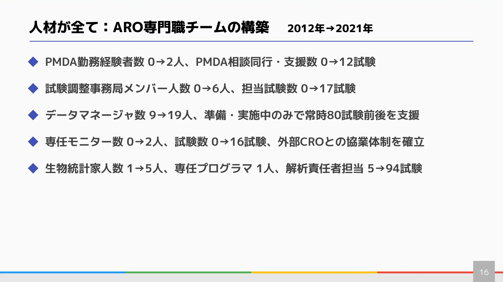
◆PMDA勤務経験者数 0→2人、PMDA相談同行・支援数 0→12試験 ◆試験調整事務局メンバー人数 0→6人、担当試験数 0→17試験 ◆データマネージャ数 9→19人、準備・実施中のみで常時80試験前後を支援 ◆専任モニター数 0→2人、試験数 0→16試験、外部CROとの協業体制を確立 ◆生物統計家人数 1→5人、専任プログラマ 1人、解析責任者担当 5→94試験 16 人材が全て：ARO専門職チームの構築 2012年→2021年
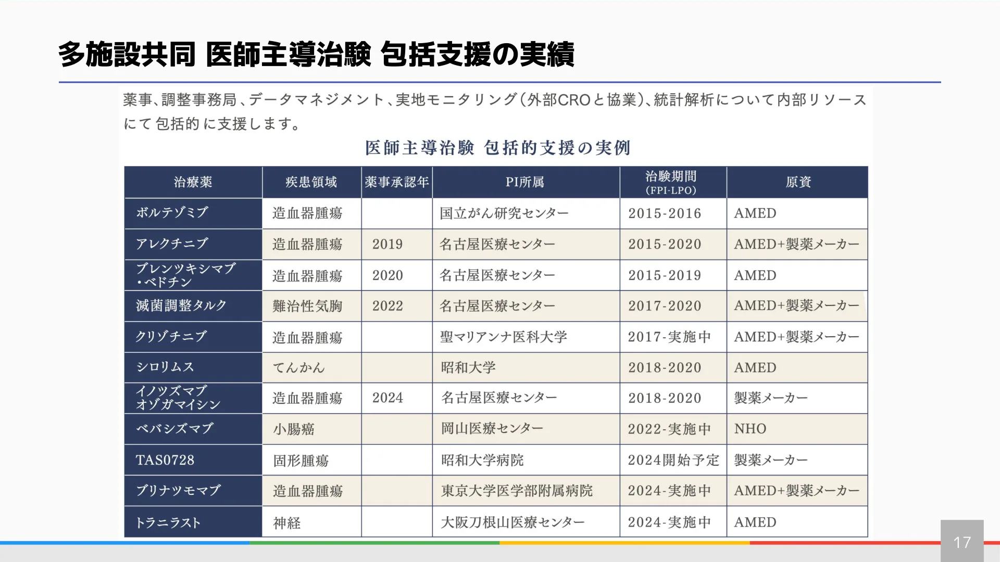
17 多施設共同 医師主導治験 包括支援の実績
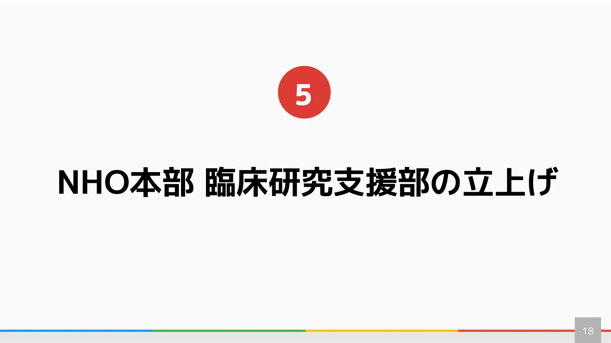
18 NHO本部 臨床研究支援部の立上げ 5
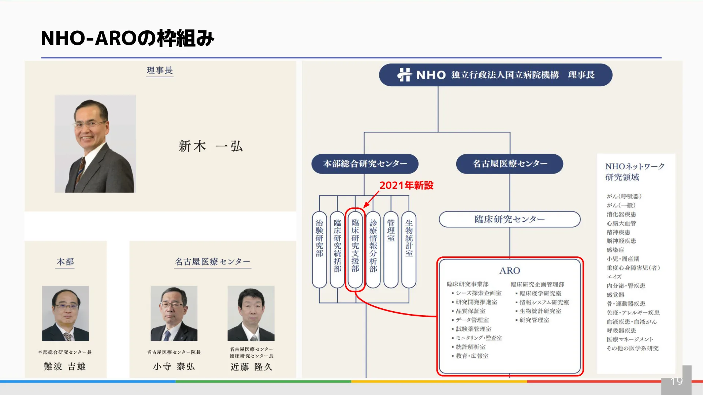
19 NHO-AROの枠組み 2021年新設
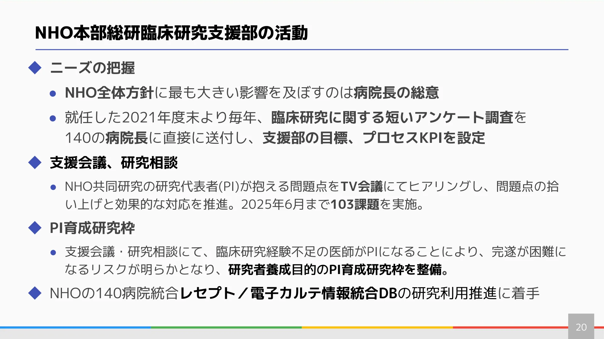
◆ニーズの把握 ●NHO全体方針に最も大きい影響を及ぼすのは病院長の総意 ●就任した2021年度末より毎年、臨床研究に関する短いアンケート調査を 140の病院長に直接に送付し、支援部の目標、プロセスKPIを設定 ◆支援会議、研究相談 ●NHO共同研究の研究代表者(PI)が抱える問題点をTV会議にてヒアリングし、問題点の拾 い上げと効果的な対応を推進。2025年6月まで103課題を実施。 ◆PI育成研究枠 ●支援会議・研究相談にて、臨床研究経験不足の医師がPIになることにより、完遂が困難に なるリスクが明らかとなり、研究者養成目的のPI育成研究枠を整備。 ◆NHOの140病院統合レセプト／電子カルテ情報統合DBの研究利用推進に着手 20 NHO本部総研臨床研究支援部の活動
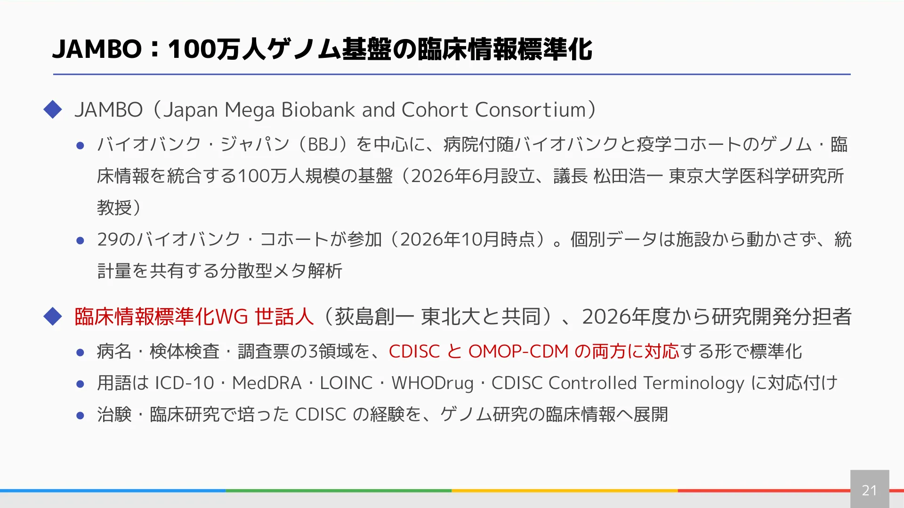
21 JAMBO：100万人ゲノム基盤の臨床情報標準化 ◆JAMBO（Japan Mega Biobank and Cohort Consortium） ●バイオバンク・ジャパン（BBJ）を中心に、病院付随バイオバンクと疫学コホートのゲノム・臨 床情報を統合する100万人規模の基盤（2026年6月設立、議長 松田浩一 東京大学医科学研究所 教授） ●29のバイオバンク・コホートが参加（2026年10月時点）。個別データは施設から動かさず、統 計量を共有する分散型メタ解析 ◆臨床情報標準化WG 世話人（荻島創一 東北大と共同）、2026年度から研究開発分担者 ●病名・検体検査・調査票の3領域を、CDISC と OMOP-CDM の両方に対応する形で標準化 ●用語は ICD-10・MedDRA・LOINC・WHODrug・CDISC Controlled Terminology に対応付け ●治験・臨床研究で培った CDISC の経験を、ゲノム研究の臨床情報へ展開